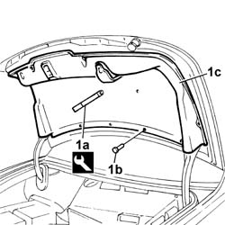

7025B18 Boot LID LINING - R.R.
- Path
- Procedures > 70 FITTINGS > 7025 COMPARTMENT LIDS > 7025B BOOT LID > 7025B18 Boot LID LINING - R.R.
- Kind
- repair procedure (removal / refitting; the operation number is the code)
- Applies to
- all engines; all production periods
- Interactive page
- https://sloeber94.github.io/elrnDB-lThss/en/#/80232
Applies to: all engines; all production periods
 Removing
Removing
 Refitting
Refitting- Open the boot lid.
1. Use the tool (1a) to release the retaining buttons (1b) and remove the lining (1c).
 | Description | Code | Function |
|---|---|---|---|
1a | Knife | 1.878.077.000 | Removing boot lid lining |

Applies to: all engines; all production periods
Refitting
Removing- Check that the lining is not damaged.
- Position the lining and fasten it using the retaining buttons.